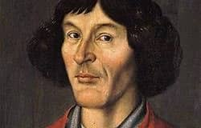

Mikołaj Kopernik (1473–1543) był wybitnym polskim astronomem, matematykiem, lekarzem i duchownym. Urodził się w Toruniu, w czasach, gdy Ziemia uważana była za centrum wszechświata. Jego badania nad ruchem planet doprowadziły do stworzenia przełomowej teorii heliocentrycznej — według której to Słońce, a nie Ziemia, znajduje się w centrum Układu Słonecznego.
Odkrycia Kopernika zrewolucjonizowały naukę i zapoczątkowały tzw. „Przewrót kopernikański” – zmianę sposobu myślenia o miejscu człowieka we wszechświecie. Jego dzieło De revolutionibus orbium coelestium („O obrotach sfer niebieskich”) stało się fundamentem nowoczesnej astronomii.
1473 – urodził się w Toruniu
1491–1495 – studia na Uniwersytecie Jagiellońskim w Krakowie
1496–1503 – studia we Włoszech (Bolonia, Padwa, Ferrara)
1503 – uzyskanie doktoratu z prawa kanonicznego
1510–1516 – działalność jako kanonik we Fromborku, prace nad teorią heliocentryczną
1543 – publikacja dzieła De revolutionibus orbium coelestium
1543 – śmierć we Fromborku